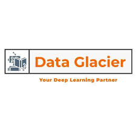
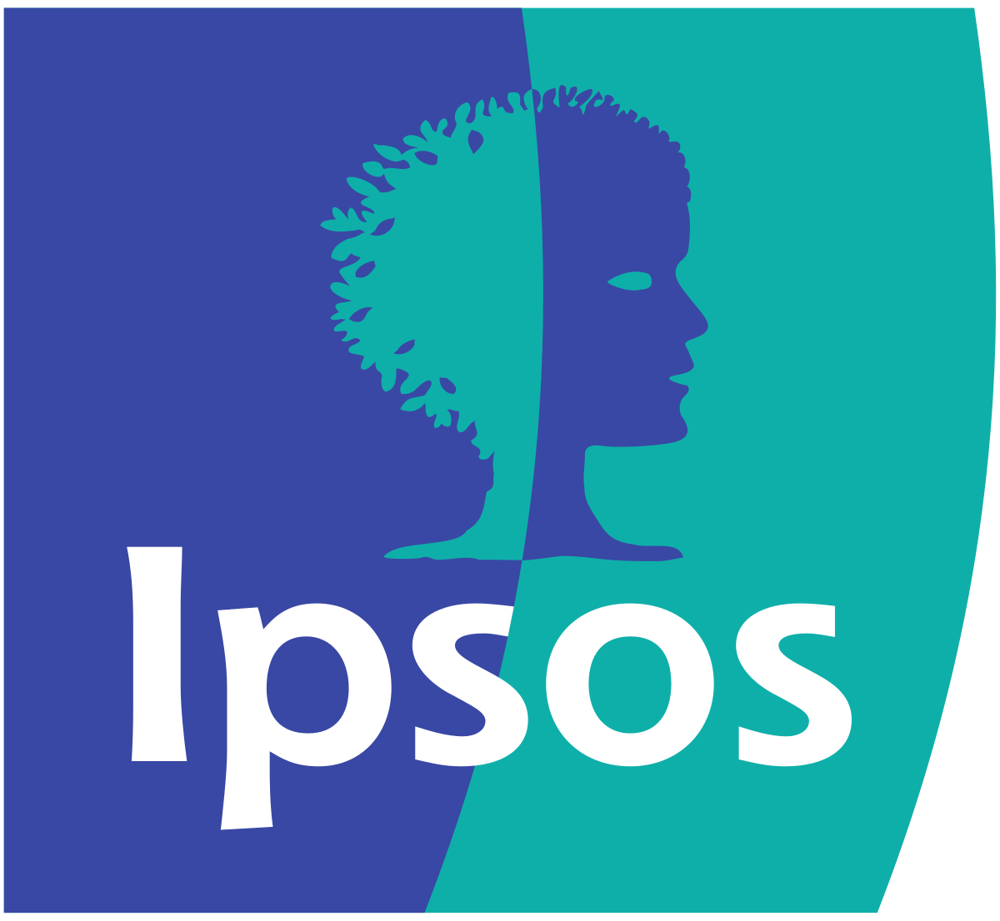

Projects

Detecting LLM Hallucinations
Investigated why LLMs hallucinate using a graph-based evaluation framework with controlled prompts to observe inferences.
Read more →Reddit Forum Classifier
NLP model that classifies reddit text speech into happy, sad, and neutral moods.
Read more →Galaxy Classifier
A deep learning computer vision project designed to classify galaxy images using convolutional neural networks.
Read more →Experience
Jun 2024 – Aug 2024
Data Science Summer Analyst @ JPMorgan Chase & Co.
Enhanced Chase's credit card acquisition strategy by uncovering temporal trends across 36 months of application data,
helping optimize the timing and structure of incentive offers. Leveraged advanced analytics — including machine learning, custom metrics, and intervention analysis —
to access customer responses and evaluated the competitive landscape.

Mar 2023 – May 2023
Data Science Intern @ Data Glacier
Conducted exploratory data analysis, tested multiple machine learning models, and facilitated model deployment to drive targeted
marketing and resource allocation for banking campaigns.

Jun 2022 – Aug 2022
Software Engineering Intern @ Ipsos
Delivered Python solutions across image processing, web scraping, CRUD operations, and AWS integration,
boosting efficiency and productivity.
Education
2024 - 2025
M.S. Data Science | University of Michigan
Focused on probability and distribution theory, statistical inference, machine learning, and computational methods,
gaining hands-on experience applying these techniques to real-world data science problems.
2020 - 2024
B.S. Data Science, B.S. Economics | University of Michigan
Built a strong foundation in data structures and algorithms, machine learning, database systems, applied regression,
and advanced mathematics. Gained analytical expertise through the study of economic theory, econometrics,
and game theory.